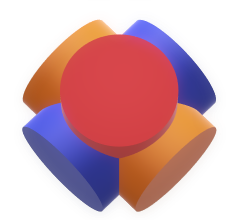

<nav class="navbar navbar-expand-md navbar-light sticky-top navFont" style="width:100%">
    <a class="navbar-brand" [routerLink]="['/home']" translate>
         Tokenpon(Demo)</a>
    <button class="navbar-toggler" type="button" data-toggle="collapse" data-target="#navbarTogglerDemo02" aria-controls="navbarTogglerDemo02" aria-expanded="false" aria-label="Toggle navigation">
        <span class="navbar-toggler-icon"></span>
    </button>
    <div class="collapse navbar-collapse" id="navbarTogglerDemo02">
        <ul class="nav navbar-nav navbar-right ml-auto">
                <li class="nav-item dropdown">
                        <a class="nav-link dropdown-toggle" href="http://example.com" id="navbarDropdownMenuLink" data-toggle="dropdown" aria-haspopup="true" aria-expanded="false">
                          Dropdown link
                        </a>
                        <ul class="dropdown-menu" aria-labelledby="navbarDropdownMenuLink">
                          <li><a class="dropdown-item" href="#">Action</a></li>
                          <li><a class="dropdown-item" href="#">Another action</a></li>
                          <li class="dropdown-submenu"><a class="dropdown-item dropdown-toggle" href="#">Submenu</a>
                            <ul class="dropdown-menu">
                              <li><a class="dropdown-item" href="#">Submenu action</a></li>
                              <li><a class="dropdown-item" href="#">Another submenu action</a></li>
                
                
                              <li class="dropdown-submenu"><a class="dropdown-item dropdown-toggle" href="#">Subsubmenu</a>
                                <ul class="dropdown-menu">
                                  <li><a class="dropdown-item" href="#">Subsubmenu action</a></li>
                                  <li><a class="dropdown-item" href="#">Another subsubmenu action</a></li>
                                </ul>
                              </li>
                              <li class="dropdown-submenu"><a class="dropdown-item dropdown-toggle" href="#">Second subsubmenu</a>
                                <ul class="dropdown-menu">
                                  <li><a class="dropdown-item" href="#">Subsubmenu action</a></li>
                                  <li><a class="dropdown-item" href="#">Another subsubmenu action</a></li>
                                </ul>
                              </li>
                
                
                
                            </ul>
                          </li>
                        </ul>
                      </li>
            <li class="nav-right">
                <select [(ngModel)]="selectedLanguage" (ngModelChange)="onChange($event)" class="nav-lang">
                            <option *ngFor="let lang of language" value="{{lang.Id}}">
                                {{lang.Id == 1?"EN":lang.Description}}
                            </option>
                </select>
            </li>
            <li class="nav-right" *ngIf="currentUser != undefined">
                <div class="nav-profile">
                    Hi,
                    <a [routerLink]="['/profile']" [queryParams]="{user: currentUser}">
                        <b>{{currentUser}} </b>
                    </a>

                </div>
            </li>
            <li *ngIf="currentUser == undefined">
                <button class="btn btn-info btn-md nav-log" [routerLink]="['/login']" translate>Login</button>
            </li>
            <li *ngIf="currentUser != undefined">
                <button class="btn btn-info btn-md nav-log" [routerLink]="['/home']" (click)="LogOut()" translate>Logout</button>
            </li>
        </ul>
       
    </div>
</nav>